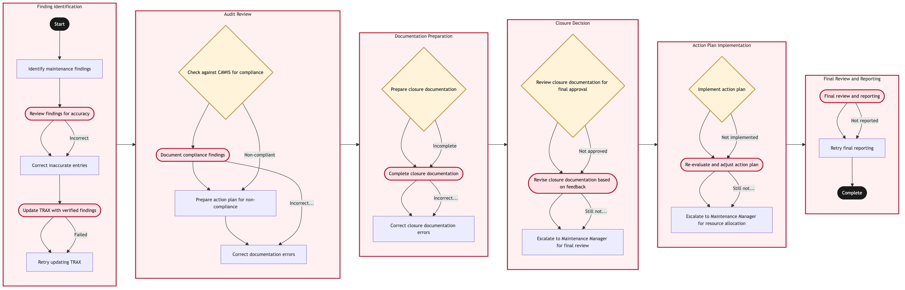

Updated 2026-08-21
Maintenance Audit and Finding Closure
Process flow
Click to zoom

Process steps
▼
Phase 1 — Finding Identification
5 steps
| Step | Activity | Role | System | Input | Output | KPI | Dec | Exc | Pain point |
|---|---|---|---|---|---|---|---|---|---|
| 1.1 | Identify maintenance findings | Maintenance Engineer | TRAXB | Audit report from Maintenance Engineer | List of maintenance findings | Findings identified within 24 hours | N | N | Manual entry errors can lead to missed findings. |
| 1.2 | Review findings for accuracy | Maintenance Auditor | TRAXB | List of maintenance findings | Verified list of maintenance findings | Findings reviewed within 48 hours | N | Y | Inaccurate data entry can cause delays in audit closure. |
| 1.3 | Correct inaccurate entries | Maintenance Auditor | TRAXB | List of maintenance findings | Updated list of maintenance findings | Corrections made within 24 hours | N | N | Time-consuming manual corrections. |
| 1.4 | Update TRAX with verified findings | Maintenance Auditor | TRAXB | Verified list of maintenance findings | Updated TRAX records | Updates completed within 24 hours | N | Y | System performance issues can slow down updates. |
| 1.5 | Retry updating TRAX | Maintenance Auditor | TRAXB | Verified list of maintenance findings | Updated TRAX records | Updates completed within 24 hours | N | N | System performance issues can slow down updates. |
▼
Phase 2 — Audit Review
4 steps
| Step | Activity | Role | System | Input | Output | KPI | Dec | Exc | Pain point |
|---|---|---|---|---|---|---|---|---|---|
| 2.1 | Check against CAWIS for compliance | Maintenance Auditor | Transport Canada CAWISC | Verified list of maintenance findings | Compliance status report | Compliance check completed within 48 hours | Y | N | CAWIS integration issues can cause delays. |
| 2.2 | Document compliance findings | Maintenance Auditor | TRAXB | Compliance status report | Updated TRAX records with compliance notes | Documentation completed within 48 hours | N | Y | Data entry errors can lead to misdocumented findings. |
| 2.3 | Prepare action plan for non-compliance | Maintenance Auditor | TRAXB | Non-compliant findings | Action plan document | Action plans prepared within 7 days | N | N | Complex action plans can take significant time. |
| 2.4 | Correct documentation errors | Maintenance Auditor | TRAXB | Compliance status report | Updated TRAX records with correct compliance notes | Corrections made within 24 hours | N | N | Time-consuming manual corrections. |
▼
Phase 3 — Documentation Preparation
3 steps
| Step | Activity | Role | System | Input | Output | KPI | Dec | Exc | Pain point |
|---|---|---|---|---|---|---|---|---|---|
| 3.1 | Prepare closure documentation | Maintenance Auditor | TRAXB | Action plan document | Closure report | Closure documents prepared within 7 days | Y | N | Complex closures can take significant time. |
| 3.2 | Complete closure documentation | Maintenance Auditor | TRAXB | Action plan document | Completed closure report | Closure documents completed within 7 days | N | Y | Data entry errors can lead to incomplete documentation. |
| 3.3 | Correct closure documentation errors | Maintenance Auditor | TRAXB | Closure report | Updated closure report | Corrections made within 24 hours | N | N | Time-consuming manual corrections. |
▼
Phase 4 — Closure Decision
3 steps
| Step | Activity | Role | System | Input | Output | KPI | Dec | Exc | Pain point |
|---|---|---|---|---|---|---|---|---|---|
| 4.1 | Review closure documentation for final approval | Maintenance Manager | TRAXB | Closure report | Approved closure report | Approval completed within 7 days | Y | N | Approval delays due to managerial workload. |
| 4.2 | Revise closure documentation based on feedback | Maintenance Auditor | TRAXB | Closure report with feedback | Revised closure report | Revisions completed within 7 days | N | Y | Feedback can require significant rework. |
| 4.3 | Escalate to Maintenance Manager for final review | Maintenance Auditor | TRAXB | Revised closure report | Final approval | Approval completed within 14 days | N | N | Multiple escalations can delay the process. |
▼
Phase 5 — Action Plan Implementation
3 steps
| Step | Activity | Role | System | Input | Output | KPI | Dec | Exc | Pain point |
|---|---|---|---|---|---|---|---|---|---|
| 5.1 | Implement action plan | Maintenance Team Leader | TRAXB | Action plan document | Action taken | Actions completed within 30 days | Y | N | Implementation delays due to resource constraints. |
| 5.2 | Re-evaluate and adjust action plan | Maintenance Team Leader | TRAXB | Action plan document | Adjusted action plan | Adjustments completed within 30 days | N | Y | Resource constraints can lead to delays. |
| 5.3 | Escalate to Maintenance Manager for resource allocation | Maintenance Team Leader | TRAXB | Adjusted action plan | Resource approval | Approval completed within 14 days | N | N | Multiple escalations can delay the process. |
▼
Phase 6 — Final Review and Reporting
2 steps
| Step | Activity | Role | System | Input | Output | KPI | Dec | Exc | Pain point |
|---|---|---|---|---|---|---|---|---|---|
| 6.1 | Final review and reporting | Maintenance Auditor | TRAXB | Approved closure report and action taken | Final report to regulatory bodies | Reporting completed within 30 days | N | Y | Reporting delays due to system integration issues. |
| 6.2 | Retry final reporting | Maintenance Auditor | TRAXB | Approved closure report and action taken | Final report to regulatory bodies | Reporting completed within 30 days | N | N | System integration issues can cause delays. |
Swim lanes
Maintenance Engineer1.1
Maintenance Auditor1.2 1.3 1.4 1.5 2.1 2.2 2.3 2.4 3.1 3.2 3.3 4.2 4.3 6.1 6.2
Maintenance Manager4.1
Maintenance Team Leader5.1 5.2 5.3
Systems touched
TRAXBTransport Canada CAWISC
Key performance indicators
- Findings identified within 24 hours
- Updates completed within 24 hours
- Compliance check completed within 48 hours
- Action plans prepared within 7 days
- Final approval completed within 14 days
Risks and control points
- System performance issues can slow down updates.
- Data entry errors can lead to misdocumented findings.
- Complex action plans can take significant time.
- Feedback can require significant rework.
- Resource constraints can lead to delays.
Air Canada Process Wiki — process and systems reference compiled from public sources
for IT Application Management and User Support pre-sales discovery.
Built 2026-08-21. Every system carries an evidence tier: tier C is an industry pattern and tier U is an open
question, and neither should be asserted as fact about Air Canada without confirmation in discovery.
Not affiliated with or endorsed by Air Canada. Air Canada, Aeroplan and Altitude are trademarks of Air Canada.